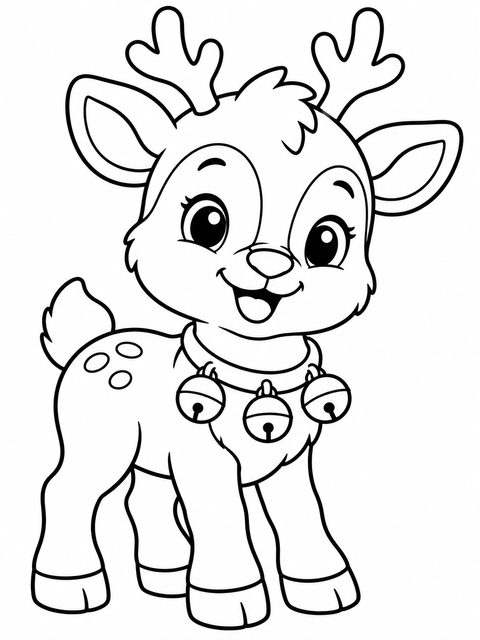
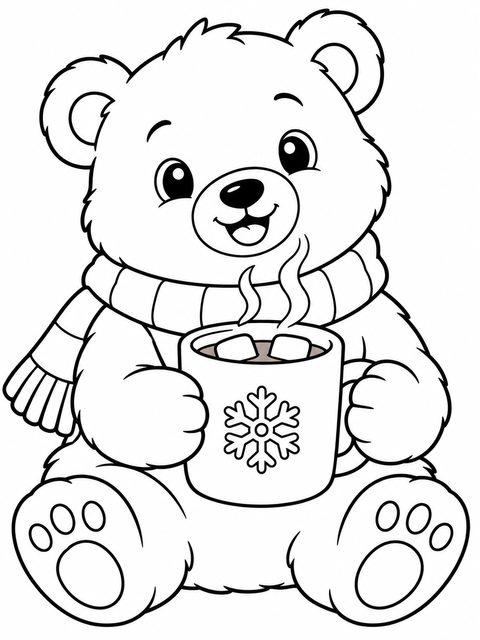
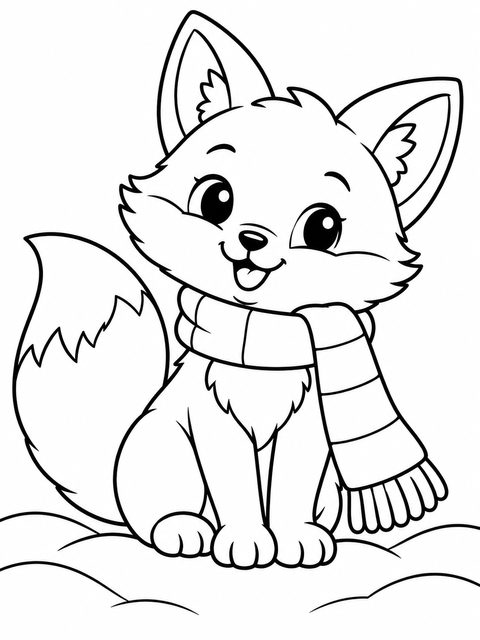
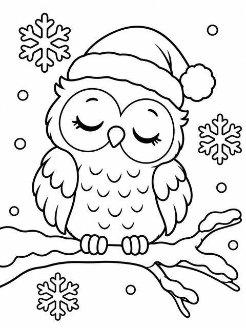
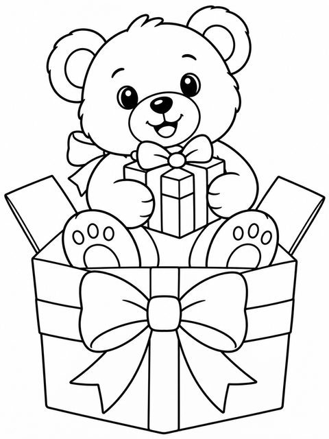
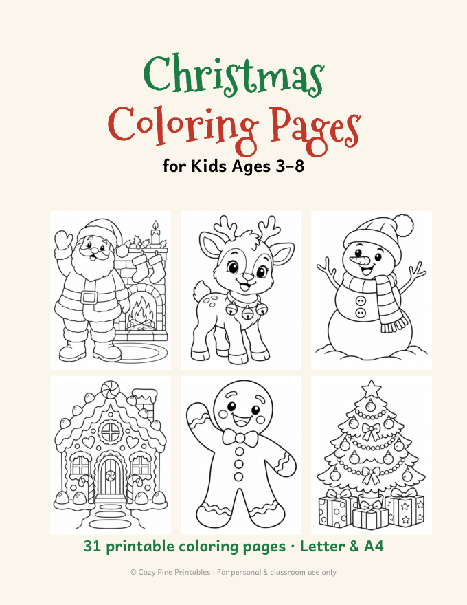

Cute Christmas Animal Coloring Pages
Reindeer, polar bear, fox, owl, puppy & kitten · ages 3–8
Kids love animals, and these cozy Christmas animals are some of our favorite pages: a baby reindeer, a polar bear holding hot cocoa, a winter fox, a snowy owl, a teddy bear with a gift and a puppy in a Santa hat.
The shapes are big and round, so even 3-year-olds can color them, while older kids can add patterns and backgrounds.
The free sample has 3 more cute animals — a penguin on skates, a snow bunny and a kitten in a gift box:
⬇ Download 4 free coloring pages (PDF)Free PDF includes:
- Snowman
- Penguin on skates
- Snow bunny
- Kitten in a gift box
Animal pages in the full pack





Christmas Coloring Pages for Kids

- 31 original coloring pages: Santa, reindeer, snowman, gingerbread house, elf, angel, cozy animals and more
- One design per page, thick clean lines for ages 3–8
- US Letter & A4 · instant PDF download
$5.00
Get all 31 coloring pages →Christmas Bundle: Math + Coloring

- Both packs: 49-page Christmas Math Worksheets + 31 Christmas coloring pages
- 80+ printable pages · 2 PDF files · instant download
- $10.99 if bought separately — save 40%
$6.43
Get the bundle →Ideas for using the pages
- Ask kids to name each animal and where it lives — a mini science talk while they color.
- Cut out the finished animals and glue them on a big paper "winter forest".
- Use them as a calm-down activity after a busy school day in December.